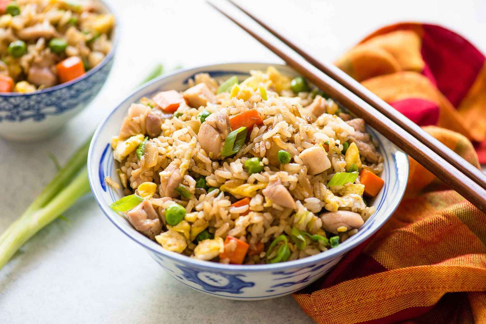

chicken Fried Rice

Chicken fried rice... a love story
Chicken fried rice is a popular Chinese-American dish that is made with cooked rice,
diced chicken, and a variety of vegetables
Ingredients
- Cooked white rice
- Diced chicken
- Vegetables (such as carrots, peas, bell peppers, and onions)
- Garlic
- Ginger
- Soy sauce
- Oyster sauce
- Sesame oil
- Eggs (optional)
- Green onions (optional)
Steps
- Cook the white rice according to the package instructions and set it aside.
- Heat a large pan or wok over medium-high heat and add a small amount of oil.
- Add the diced chicken to the pan and cook until it is no longer pink.
- Add the vegetables to the pan and cook until they are tender.
- Add the garlic and ginger to the pan and cook for an additional minute.
- If using eggs, push the chicken and vegetables to the sides of the pan and add the beaten eggs to the center.
Scramble the eggs until they are cooked, then stir them into the chicken and vegetables.
- Add the cooked rice to the pan and stir everything together.
- Stir in the soy sauce, oyster sauce, and sesame oil until the rice is fully coated.
- If using green onions, add them to the pan and stir them into the rice.
- Serve the chicken fried rice hot, garnished with additional green onions or sesame seeds if desired. Enjoy!